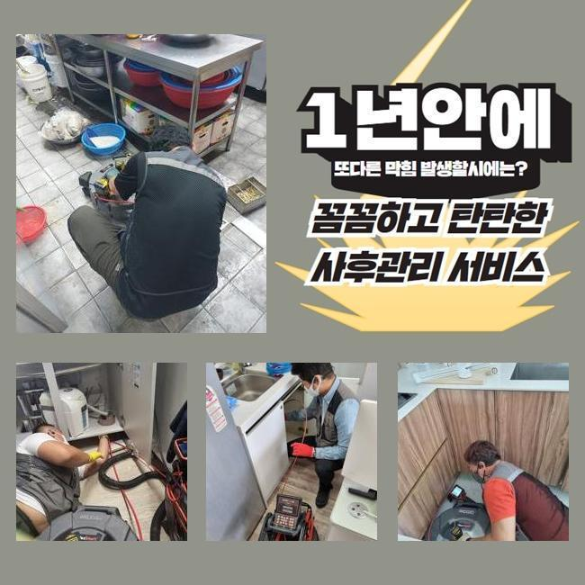
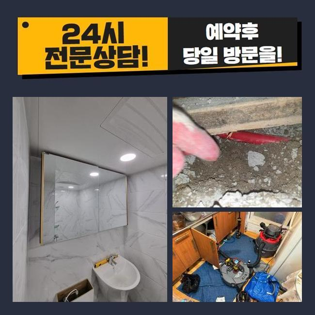
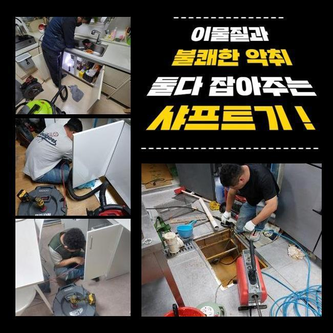
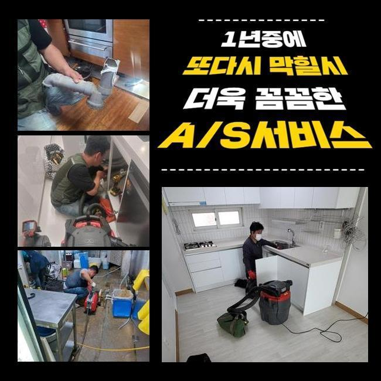
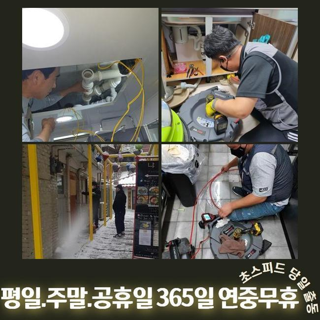
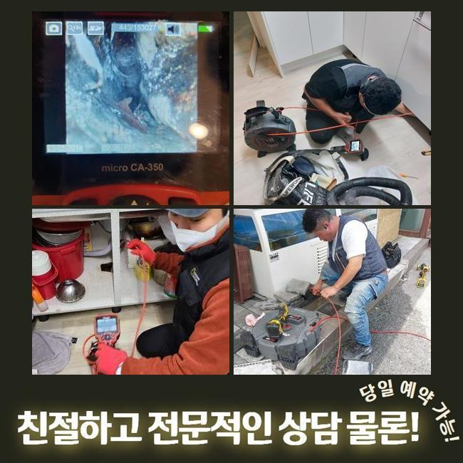

🏠 관악구 청룡동하수구뚫음 미성동 하수구청소 설비공사
용인 하수구막힘 전문 시공 후기

📋 작업 개요
- 위치: 용인
- 서비스 유형: 하수구막힘, 배관막힘, 맨홀막힘, 역류해결, 뚫는업체, 배관청소, 고압세척, 설비공사
- 작업 일시: 2025. 3. 19. 19:17
- 업체명: 하수구수사대 (010-5615-2118)
🔍 문제 상황
관악구 청룡동하수구뚫음 미성동 하수구청소 설비공사
하수시설은 주거지나 가게 등에서 당연히 배치되는 시설로써 매우 중요합니다
하수를 순환시켜 깨끗한 생활환경을 유지 할 수 있게 하는 수단이 되며 질병 발생 확률을 낮추게됩니다
이러한 배수구가 막혀버리면 이물질이 누적되어 썩는듯한 냄새들이 발생하고 집안에 위치한 하수시설에서 곤란한 상황이 일어날 수 있어요
이로 인해 하수가 역류하여 넘치거나 깨끗한 물을 사용할 수 없는 상황을 초래하게 되면서 불편한 상황이 발생합니다
아침에 배수구 막힘사고로 긴급한 연락을 받고 서둘러 목적지로 출발했습니다
우선 막힘문제가 일어난 집을 살펴보았습니다
확인해본 결과로는 집안에서 수도를 사용하실때마다 부동전에서 이어진 하수라인에서 물이 역방향으로 진행하는 현상들이 일어나고 있었어요
화장실과 주방에서 수도를 이용하시는 경우에 하수관을 통해서 발생하는 악취가 매우 고약했습니다

🔎 원인 분석
💡 전문가 진단: 정밀 진단 장비를 사용하여 슬러지의 고착 여부를 판명하고 타격/세척 작업을 실시했습니다.
문제점을 해결하고자 내시경기기를 통해서 중심 맨홀 안쪽을 살펴보았어요
음식 기름등이 부패되며 하수라인에서 지독한 악취까지 발생시키는 상황이였고 집안쪽으로 오하수가 범람하는 현상까지 일어날 수도 있으므로 신속한 시공에 들어갔어요
메인이 되는 중심관의 역할을 설명 해드리겠습니다
본관의는 생활을 하시면서 나오는 폐수를 순환시키는 매우 중요한 장치입니다
본관이 막히게되면 배관 안에서부터 빠져나가지 못한 하수가 부동전쪽의 배수관에서 역류사고가 생깁니다
이러한 때에는 안쪽에서 배수구만 뚫는다고 해도 문제점을 해결할 수 없으므로 메인 배수구의 막힘문제를 수리해야지만 배수등이 수월하게 진행되실 거예요
보통 집 안에서 일어나는 사소한 일은 어렵지 않게 해결하실 수도 있지만 관경이 넓은 본관은 고압세척장치를 써서 딱딱하게 변한 오염물질을 스케일링 할수있어요
고압세척기계의 노즐라인은 배수라인의 꺾인 부위까지 작업이 가능하므로 신속하게 청소합니다
중심관에 고압장비를 사용해 음식찌꺼기와 다량의 오염물질을 청소했어요
청소를 마치고 내시경장치를 이용해서 하수가 잘 나오는지 체크했어요

🔧 작업 과정
고객께서 하수관의 내부를 함께 보시면서 배수구가 완벽하게 청소된 것까지 확인하시고 난 후에 마지막 정리까지 요청 하셨어요
다음 현장에 출동하여 막혀있는 하수관을 작업했습니다
이번에는 베란다에서 오수가 역방향으로 진행하며 침전물이 같이 올라오며 끔찍한 악취까지 나는 상황이였어요
보통은 세면대 밑부분이나 베란다의 배수구를 통해서 배관의 청소를 시작하는 것이 일반적인 경우지만 이번엔 어려운 구조의 트랩으로 난관에 봉착했어요
P트랩의 경우에 벌레의 침입을 방지하는데 유리하지만서도 구조상 불순물이 누적되어 배수구가 막히게 되는 원인이기도 합니다
이와같은 경우에는 고압세척기 이용이 불가능한 상황이 발생합니다
노즐의 투입이 힘들기때문에 의뢰인께 추가로 비용들을 청구하지 않기위해 효율적인 작업방법을 선택해야만 했어요
복잡한 트랩의 구조적인 특성때문에 고압세척장비를 이용하면 배수관이 손상될 수 있으므로 샤프트장비를 활용해 작업을 진행했습니다
샤프트기는 회전하는 힘을 이용하여 하수라인 내부에 누적 되어있는 이물질들을 제거합니다
샤프트기는 배수관을 긁거나 피해주지 않으면서 끝쪽까지 작업이 가능합니다
브러시를 샤프트기 끝에 장착하고 불순물을 긁어낼 수 있으며 구부러진 부위까지 진입시킬 수 있어서 배수라인 끝부분에 누적된 침전물도 완벽하게 청소합니다
몇 번의 작업만으로는 완벽하게 제거되지 않아서 샤프트기를 반복해서 이용하여 딱딱하게 변형된 슬러지를 세척했습니다
하수구 세척이 끝난 후에 배수의 흐름이 정상적으로 순환되는지 확인하였고 고객님도 문제의 하수관을 저희와 함께 보시고나서 안심하셨습니다
하수관에 막힘문제가 발생했을때 즉시 수리를 하지 않으시면 하수관에 적재된 이물질들이 썩게되면서 고약한 냄새가 올라오며 배수가 잘 이루어지지 않으므로 오염수가 역방향으로 진행하게 되는 사태가 발생할 수 있습니다
하수관 내부에서 압력이 높아지게 되면 배수라인 내부에 피해가 계속 진행돼 물이 샐 수도 있으며 고객의 금전적인 부담과 많은 시간까지 들여야합니다


✅ 작업 완료
하수관 역류사고가 발견 되셨다면 전문적인 업체에 전화하셔서 최대한 빠른 시일내에 대책을 취하시는게 가장 좋습니다
오늘 현장에서는 하수관 역류사고를 해결했고 배수구 악취 제거까지 완료했어요
의뢰인의 수도 사용 습관들을 고치실 것을 안내드리고 하수설비의 이상이 다시 일어나지 않게끔 검수를 마쳤습니다
하수관 관련된 문제로 편안하게 저희 전문진에게 전화 해주시면 바로 해결하겠습니다!



⚠️ 하수구 배관 막힘 예방 및 관리 가이드
- ✅ 머리카락, 비닐, 물티슈 등 물에 분해되지 않는 이물질은 하수구 유입을 절대 금지해 주세요.
- ✅ 하수구 거름망을 씌우고 모여진 이물질은 주기적으로 쓰레기통에 바로 비워주셔야 합니다.
- ✅ 배관 노후가 심할 경우 이물질이 더 쉽게 걸리므로 주기적인 배관 세척(고압세척 등)을 권장합니다.
- ✅ 작업 후 1년 이내 재발 시 하수구수사대에서 무상 A/S 보증 서비스를 제공합니다.
💡 핵심 정리
- 확실한 장비 작업(내시경 점검 및 샤프트 스케일링)으로 원인을 뿌리 뽑습니다.
- 작업 후 1년 이내에 동일한 부위 재발 시 100% 무상 A/S 서비스를 보장합니다.
- 서울 · 경기 · 인천 전 지역에 24시간 언제든 긴급 출동할 수 있도록 항시 대기 중입니다.
❓ 자주 묻는 질문 (FAQ)
🚨 용인 하수구막힘 문제로 고민이신가요?
정확한 원인 진단과 확실한 시공으로 재발 없는 해결을 약속드립니다.
24시간 긴급 출동 | 서울 · 경기 · 인천 전지역 | 1년 내 재발 시 무상 A/S